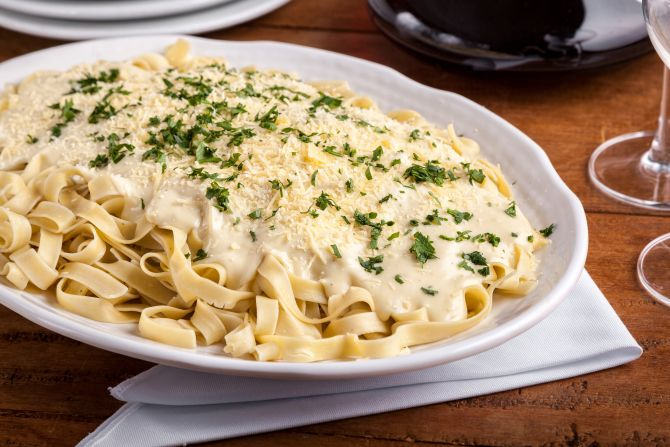

Fetuccine ao Molho de Quatro Queijos

Imagem: Fetuccine 4 queijos
A delicious meal. If you know portuguese.
Igredientes:
- 400 g de massa fettuccine
- 100 g de mussarela
- 100 g de queijo provolone
- 60 g de queijo gorgonzola
- 50 g de queijo parmesão
- 2 gemas
- 100 ml de vinho branco
- 300 ml de creme de leite fresco
- Nozmoscada
- Sal e pimenta do reino
Modo de Preparo:
- Rale os queijos em ralo grosso.
- Coloque o vinho para ferver e acrescente os queijos.
- Mexa em fogo baixo até que os queijos estejam derretidos.
- Acrescente o creme de leite e misture bem. Bata levemente as duas gemas e acrescente um pouco da mistura fervente
- Misture e coloque na panela com o molho. Temperar com sal e pimenta-do-reino. Cozinhe a massa "al dente" e sirva com o molho salpicado com a nozmoscada.